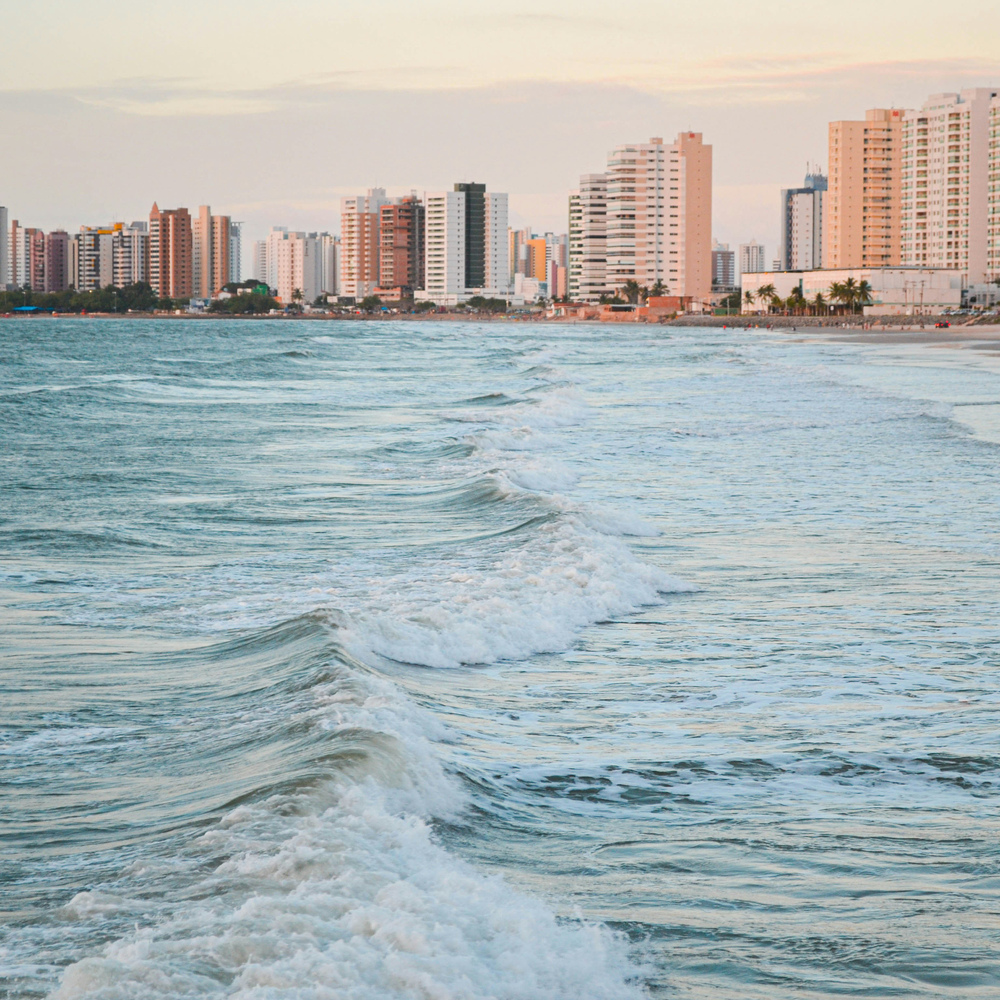
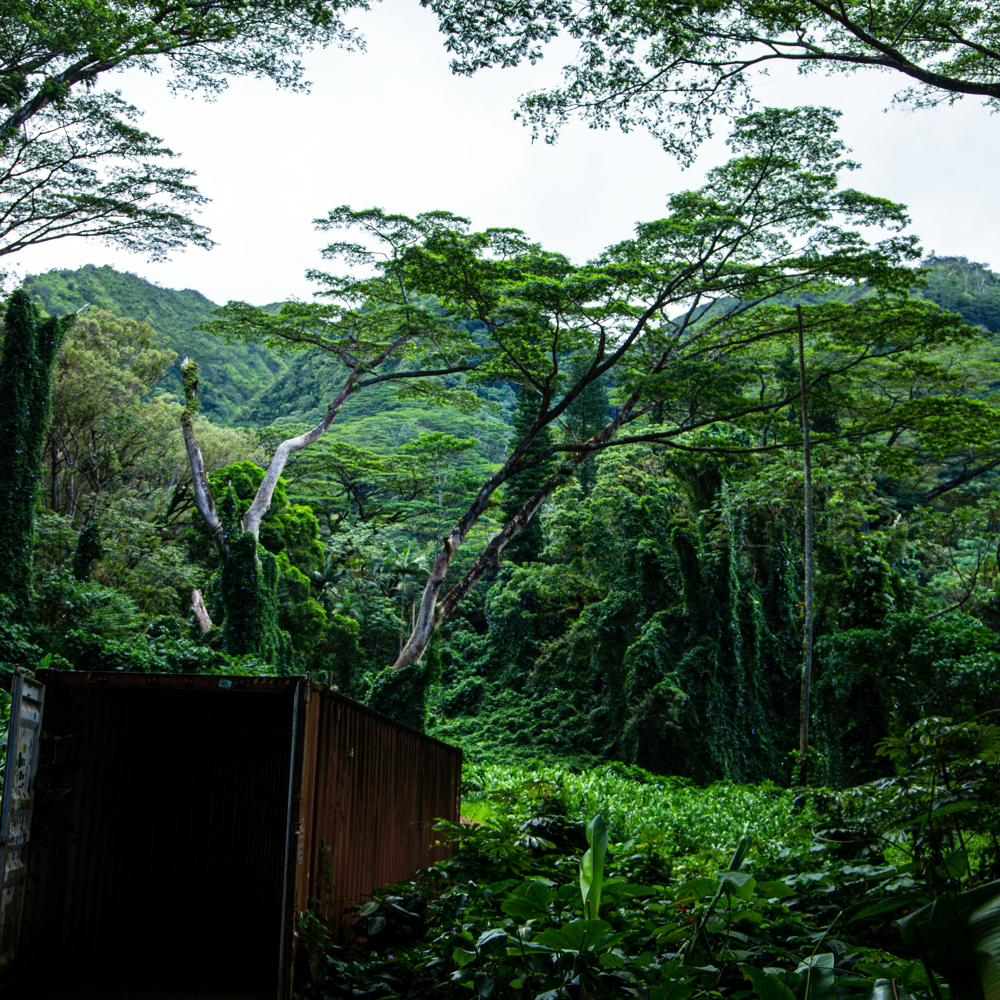
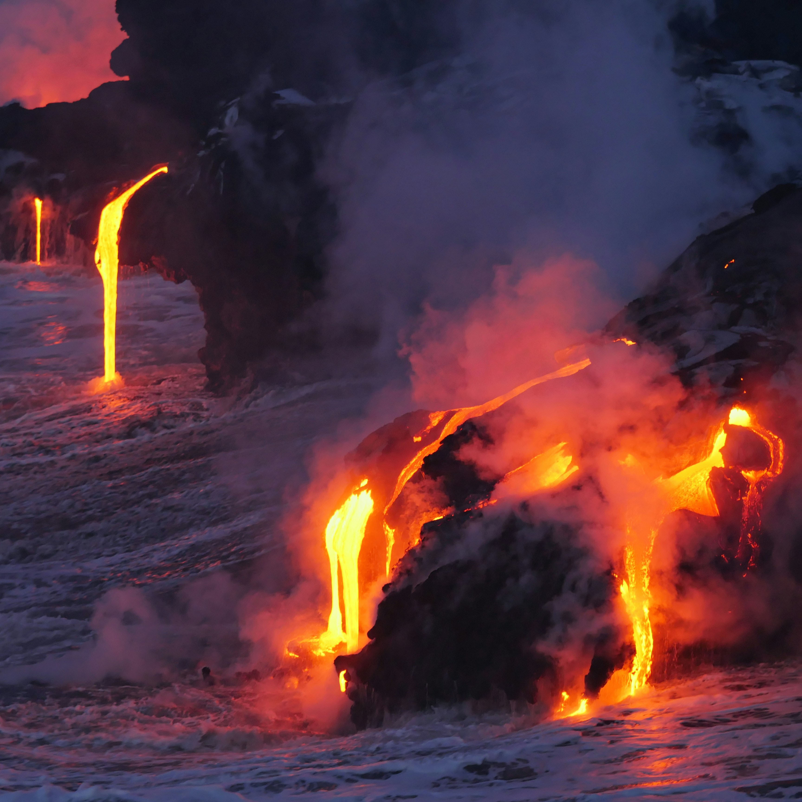

Taniti City
Most tourists spend most of their time in Taniti City, which boasts native architecture and nearby white, sandy beaches encircling beautiful Yellow Leaf Bay.
Book Now

Hiking
Take a bus or boat tour around the island, or, if you're feeling up for it, take a hike through the gorgeous rainforest.
Book Now

Volcano!
Yes, you read that right. Taniti has an active volcano. So if you're looking for some hot stuff, book a tour and see it for yourself!
Book Now